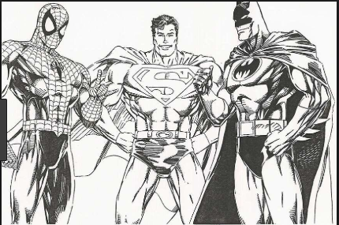

I have lots of hobbies but my main 3 hobbies are watching TV, play with my friends, and also drawing.
My first hobby is watching TV my favorite shows to watch are like Spongebob. My second hobby is playing with my friends one thing that i like doing with my friends is go to the park.
My last hobby is to draw I usually like to draw like superhero's like Deadpool.
Here are some pictures to show my hobbies.
